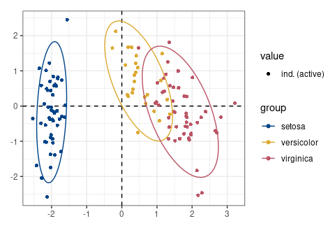
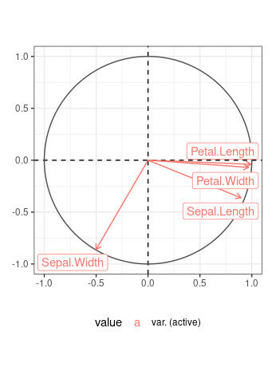
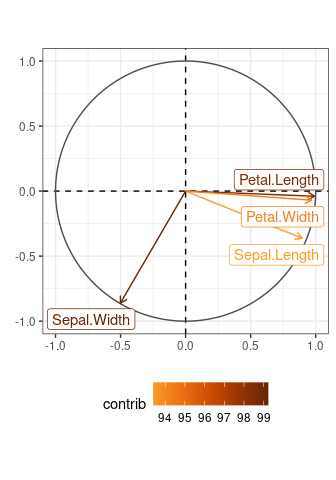
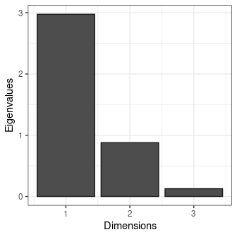
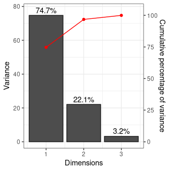
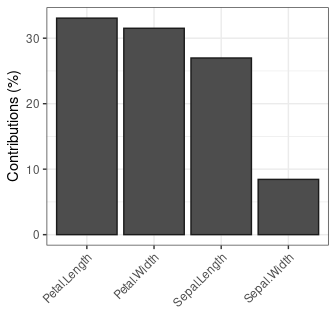

Simple Principal Components Analysis (PCA) and Correspondence Analysis (CA). This package provides S4 classes and methods to compute, extract, summarize and visualize results of multivariate data analysis.
There are many very good packages for multivariate data analysis (such as FactoMineR, ade4 or ca, all extended by FactoExtra). dimensio is designed to have as few dependencies as possible: computation and exploration of the results depends only on the R base packages. Visualization methods require ggplot2.
Installation
You can install the released version of dimensio from CRAN with:
install.packages("dimensio")And the development version from GitHub with:
# install.packages("remotes")
remotes::install_github("tesselle/dimensio")Usage
## Compute PCA
## (non numeric variables are automatically removed)
X <- pca(iris, scale = TRUE, sup_ind = 50:75)
#> 1 qualitative variable was removed: Species.Visualize
dimensio uses ggplot2 for plotting informations. Visualization methods produce graphics with as few elements as possible: this makes it easy to customize diagrams (e.g. using extra layers, themes and scales).
## Plot active individuals by group
plot_individuals(X, group = iris$Species, active = TRUE, sup = FALSE) +
ggplot2::stat_ellipse() + # Add ellipses
ggplot2::theme_bw() + # Change theme
khroma::scale_color_contrast() # Custom color scale
## Plot all individuals by cos2
plot_individuals(X, highlight = "cos2", active = TRUE, sup = TRUE) +
ggplot2::theme_bw() + # Change theme
khroma::scale_color_iridescent() # Custom color scale

## Plot variables factor map
plot_variables(X) +
ggrepel::geom_label_repel() + # Add repelling labels
ggplot2::theme_bw() + # Change theme
ggplot2::theme(legend.position = "bottom") # Edit theme
## Highlight contributions
plot_variables(X, highlight = "contrib") +
ggrepel::geom_label_repel() + # Add repelling labels
ggplot2::theme_bw() + # Change theme
ggplot2::theme(legend.position = "bottom") + # Edit theme
khroma::scale_color_YlOrBr(range = c(0.5, 1)) # Custom color scale

## Plot eigenvalues
plot_eigenvalues(X) +
ggplot2::theme_bw() # Change theme
## Plot percentages of variance
plot_variance(X, variance = TRUE, cumulative = TRUE) +
ggplot2::geom_text(nudge_y = 3) + # Add labels
ggplot2::theme_bw() # Change theme
## Plot variables contributions
plot_contributions(X, margin = 2, axes = 1) +
ggplot2::theme_bw() + # Change theme
ggplot2::theme( # Edit theme
# Rotate x axis labels
axis.text.x = ggplot2::element_text(angle = 45, hjust = 1, vjust = 1)
)


Contributing
Please note that the dimensio project is released with a Contributor Code of Conduct. By contributing to this project, you agree to abide by its terms.